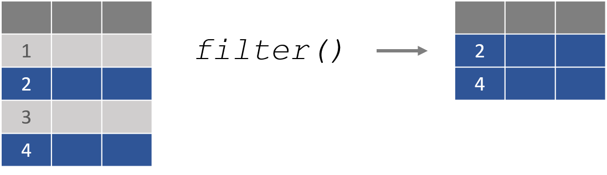

1 DATA VERBS
In this section we are shifting the focus from vector operations to dataset operations.
Some of the most popular packages for building and manipulating datasets come from what is affectionately referred to as the “tidyverse”, a set of packages developed by Hadley Wickam and the R Studio team. They are designed to make basic dataset operations more intuitive and robust.
These packages were created with a common framework for data design called “tidy data”. When datasets are built as or wrangled into the tidy format they are much easier to analyze, and they will play nicely with a large set of packages the follow the same philosophy of data design.
The core R packages contain all of the functions necessary to wrangle datasets, but they are sometimes counter-intuitive or clumbsy in the sense that they might start with a data frame and return a table or a list, making them hard to use in data recipes. All of the “data verbs” that we will cover in this section start with a data frame and return a data frame, making them easier to use as data steps within a larger project.
We will begin with some extremely useful verbs contained within the dplyr package.

Figure 1.1: A data verb requires a dataset as input, and returns a transformed dataset.
2 The dplyr Package
2.1 Packages Used in This Chapter
library( dplyr )
library( pander )2.2 Key Concepts

Figure 2.1: Data verbs are functions that require a dataframe as the primary argument, perform some transformation on the data, then return a new dataframe.
For a nice overview of all of the dataset verbs in dplyr check out The dplyr Cheatsheet.
2.3 The dplyr Package
This chapter will demonstrate a few basic dataset functions contained within the dplyr package. There are a few things to note as you get started:
dplyrfunctions are all data verbs that accept a dataset as the argument, transform the data, and return a new dataset.- The first argument is always the dataset name, and variables (columns) can be referenced directly by name without quotation marks.
dplyrfunctions will return data as a “tibble” (tbl_df class), which is a regular data frame wrapped in a nice print method that includes metadata in the printout.
For example, here is the regular data frame preview:
## weight group
## 1 4.17 ctrl
## 2 5.58 ctrl
## 3 5.18 ctrl
## 4 6.11 ctrl
## 5 4.50 ctrl
## 6 4.61 ctrl
## 7 5.17 ctrl
## 8 4.53 ctrl
## 9 5.33 ctrl
## 10 5.14 ctrlThe tibble will print the first few rows and columns of a dataset, and includes dataset dimensions and vector classes:
## # A tibble: 30 x 2
## weight group
## <dbl> <fct>
## 1 4.17 ctrl
## 2 5.58 ctrl
## 3 5.18 ctrl
## 4 6.11 ctrl
## 5 4.5 ctrl
## 6 4.61 ctrl
## 7 5.17 ctrl
## 8 4.53 ctrl
## 9 5.33 ctrl
## 10 5.14 ctrl
## # ... with 20 more rowsWe will cover the following dplyr functions in this section of the textbook:
| DATA VERB | ACTION |
|---|---|
| filter() | Select rows |
| select() | Select columns |
| arrage() | Sort the dataset by one or more columns |
| mutate() | Create a new variable by transforming an existing variable or variables |
| summarize() | Create summary statistics for specified variables |
| group_by() | Split the dataset (implicitly) into a separate dataset for each group |
2.4 Use filter() to Subset Rows

In the last chapter we learned how to use operators to translate from plain English questions to data queries.
As an example, a city manager might want to know the average amount owed on a delinquent property tax.
| tax.id | amount.owed |
|---|---|
| 1 | $0 |
| 2 | $5,549 |
| 3 | $0 |
| 4 | $1,709 |
| 5 | $0 |
| 6 | $634 |
| 7 | $0 |
| 8 | $0 |
| 9 | $0 |
| 10 | $9,353 |
We could write the query as follows:
- Define the group.
- Select the data that belongs to the group.
- Analyze the group subset.
these.late <- taxdat$amount.owed > 0 # 1. Define group
overdue.amounts <- taxdat$amount.owed[ these.late ] # 2. Select data
overdue.amounts## [1] 5549 1709 634 9353 1366mean( overdue.amounts ) # 3. Analyze data## [1] 3722.2The filter() function in the dplyr package is a slightly more elegant verb for selecting the group and subsetting the data by rows.
filter( dataset name , logical expression )
filter( taxdat, amount.owed > 0 )## tax.id amount.owed
## 1 2 5549
## 2 4 1709
## 3 6 634
## 4 10 9353
## 5 12 1366Note that we do not need to reference the dat$ references inside dplyr functions.
2.5 select() Columns

In the core R operators, we select colums from a dataset using the subset function:
data( USArrests ) # historic data on crime rates in the US| Murder | Assault | UrbanPop | Rape | |
|---|---|---|---|---|
| Alabama | 13.2 | 236 | 58 | 21.2 |
| Alaska | 10 | 263 | 48 | 44.5 |
| Arizona | 8.1 | 294 | 80 | 31 |
| Arkansas | 8.8 | 190 | 50 | 19.5 |
| California | 9 | 276 | 91 | 40.6 |
| Colorado | 7.9 | 204 | 78 | 38.7 |
USArrests[ , c("Murder","Assault") ]| Murder | Assault | |
|---|---|---|
| Alabama | 13.2 | 236 |
| Alaska | 10 | 263 |
| Arizona | 8.1 | 294 |
| Arkansas | 8.8 | 190 |
| California | 9 | 276 |
| Colorado | 7.9 | 204 |
The select() function converts this oeration into a data verb:
select( USArrests, Murder, Assault )| Murder | Assault | |
|---|---|---|
| Alabama | 13.2 | 236 |
| Alaska | 10 | 263 |
| Arizona | 8.1 | 294 |
| Arkansas | 8.8 | 190 |
| California | 9 | 276 |
| Colorado | 7.9 | 204 |
The select() function adds a lot of additional arguments that make it easy to quickly identify and keep only the necessary variables. We can demonstrate a few using the built-in iris dataset in R.
head( iris ) %>% pander()| Sepal.Length | Sepal.Width | Petal.Length | Petal.Width | Species |
|---|---|---|---|---|
| 5.1 | 3.5 | 1.4 | 0.2 | setosa |
| 4.9 | 3 | 1.4 | 0.2 | setosa |
| 4.7 | 3.2 | 1.3 | 0.2 | setosa |
| 4.6 | 3.1 | 1.5 | 0.2 | setosa |
| 5 | 3.6 | 1.4 | 0.2 | setosa |
| 5.4 | 3.9 | 1.7 | 0.4 | setosa |
Exclude a column with the negative sign:
select( iris, -Species ) | Sepal.Length | Sepal.Width | Petal.Length | Petal.Width |
|---|---|---|---|
| 5.1 | 3.5 | 1.4 | 0.2 |
| 4.9 | 3 | 1.4 | 0.2 |
| 4.7 | 3.2 | 1.3 | 0.2 |
| 4.6 | 3.1 | 1.5 | 0.2 |
| 5 | 3.6 | 1.4 | 0.2 |
| 5.4 | 3.9 | 1.7 | 0.4 |
Select by variable names:
select( iris, ends_with( "Length" ) ) | Sepal.Length | Petal.Length |
|---|---|
| 5.1 | 1.4 |
| 4.9 | 1.4 |
| 4.7 | 1.3 |
| 4.6 | 1.5 |
| 5 | 1.4 |
| 5.4 | 1.7 |
select( iris, starts_with( "Petal" ) ) | Petal.Length | Petal.Width |
|---|---|
| 1.4 | 0.2 |
| 1.4 | 0.2 |
| 1.3 | 0.2 |
| 1.5 | 0.2 |
| 1.4 | 0.2 |
| 1.7 | 0.4 |
select( iris, matches("pal") ) | Sepal.Length | Sepal.Width |
|---|---|
| 5.1 | 3.5 |
| 4.9 | 3 |
| 4.7 | 3.2 |
| 4.6 | 3.1 |
| 5 | 3.6 |
| 5.4 | 3.9 |
Or we can select by a range of variables by placing a colon between the first and last:
select( iris, Sepal.Length:Petal.Width ) | Petal.Length | Petal.Width | Species |
|---|---|---|
| 1.4 | 0.2 | setosa |
| 1.4 | 0.2 | setosa |
| 1.3 | 0.2 | setosa |
| 1.5 | 0.2 | setosa |
| 1.4 | 0.2 | setosa |
| 1.7 | 0.4 | setosa |
2.6 arrange() Sorts Data

The arrange() function sorts a dataset by one or more columns. By default, it sorts from smallest to largest.
arrange( PlantGrowth, weight ) | weight | group |
|---|---|
| 3.59 | trt1 |
| 3.83 | trt1 |
| 4.17 | ctrl |
| 4.17 | trt1 |
| 4.32 | trt1 |
If we prefer the dataset be sorted from largest to smallest, we can applyr the descending function desc() to the sort variable.
arrange( PlantGrowth, desc(weight) ) | weight | group |
|---|---|
| 6.31 | trt2 |
| 6.15 | trt2 |
| 6.11 | ctrl |
| 6.03 | trt1 |
| 5.87 | trt1 |
Or alternatively we can use the shortcut syntax of adding a negative sign in front of the variable:
arrange( PlantGrowth, -weight ) We can also sort by multiple columns at once:
arrange( PlantGrowth, group, weight ) | group | weight |
|---|---|
| ctrl | 5.17 |
| ctrl | 5.18 |
| ctrl | 5.33 |
| ctrl | 5.58 |
| ctrl | 6.11 |
| trt1 | 4.69 |
| trt1 | 4.81 |
| trt1 | 4.89 |
| trt1 | 5.87 |
| trt1 | 6.03 |
NOTE, the equivalent core R functions would use subset[] and order() functions together. You might see examples on Stack Overflow written like this:
PlantGrowth[ order(PlantGrowth$weight, decreasing=TRUE) , ]| weight | group | |
|---|---|---|
| 21 | 6.31 | trt2 |
| 28 | 6.15 | trt2 |
| 4 | 6.11 | ctrl |
| 17 | 6.03 | trt1 |
| 15 | 5.87 | trt1 |
| 29 | 5.8 | trt2 |
As you can see, the dplyr versions are typically more intuitive and concise!
2.7 Variable Transforms with mutate()
One of the most common operations in data analysis is to create a new variable from one or more existing variables, a “variable transformation”. Some examples include:
x_squared <- x * x
celsius <- ( fereinheit - 32 ) * ( 5/9 )
body.mass.index <- kg / meters^2
per.capita.income <- income / populationThe mutate() function creates a new transformed variable from the forumala you specify and adds it to the original dataset.
As an example, perhaps we have data on the number of nonprofits located in each US city. If we look at the raw count of nonprofits, it makes it look as though the large cities have the most vibrant nonprofit sectors:
| city | nonprofits |
|---|---|
| NEW YORK | 26503 |
| LOS ANGELES | 17417 |
| WASHINGTON | 15701 |
| SAN FRANCISCO | 12149 |
| BOSTON | 10536 |
| CHICAGO | 10247 |
| PHILADELPHIA | 8538 |
| DALLAS | 6008 |
| SEATTLE | 5830 |
| ATLANTA | 5438 |
But these numbers may be misleading. Once we account for the population size through a new nonprofit density metric (nonprofits per 1,000 residents), we can see that some smaller cities have higher densities per capita.
dat.npos <- mutate( dat.npos, density = nonprofits / (pop/1000) )| city | density |
|---|---|
| PORTLAND | 2.65 |
| MADISON | 2.415 |
| ANCHORAGE | 2.156 |
| SANTA BARBARA | 1.928 |
| LINCOLN | 1.886 |
| WASHINGTON | 1.866 |
| ASHEVILLE | 1.805 |
| TALLAHASSEE | 1.785 |
| BOSTON | 1.692 |
| ALBANY | 1.685 |
2.8 rename() Variables
More often than not you will read in a dataset that has strange or meaningless variable names:
x1 <- c("male","male","female","female")
x2 <- c("treatment","control","treatment","control")
dat <- data.frame( x1, x2 )| x1 | x2 |
|---|---|
| male | treatment |
| male | control |
| female | treatment |
| female | control |
The core R functions make it a little awkward to rename these variables.
names( dat ) <- c("gender","study.group")| gender | study.group |
|---|---|
| male | treatment |
| male | control |
| female | treatment |
| female | control |
The rename() function provides a more intuitive syntax:
rename( dat, gender=x1, study.group=x2 )2.9 summarize() Variables
The next chapter will cover descriptive statistics in more depth, including some useful packages and functions for generating statistics for a variety of variable types and and reporting nice tables.
Most descriptive functions, however, are not data verbs in the sense that they accept a data frame as the input and return a transformed data frame or tibble. The dplyr function summarize() is the primary function that will be used in data recipes (see the next chapter).
Like other data verbs, the first argument will be the input dataset. In this case, there is no pre-determined set of descriptive statistics. The user needs to specify the desired metrics.
| group | gender | strength |
|---|---|---|
| control | male | 86 |
| treatment | female | 110 |
| control | female | 92 |
| treatment | male | 100 |
| treatment | female | 110 |
| treatment | male | 73 |
summarize( dat, n=n(), min=min(strength), mean=mean(strength), max=max(strength) )## n min mean max
## 1 100 33 97.53 158Similarly, the native table() function is useful, but returns a table object. The dplyr count() function will function almost identically, but it will return a data frame.
dplyr::count( dat, group, gender )## # A tibble: 4 x 3
## group gender n
## <fct> <fct> <int>
## 1 control female 24
## 2 control male 27
## 3 treatment female 27
## 4 treatment male 22The real power of this function is the ability to use it with the group_by() function to analyze outcomes for many data subsets at once.
grouped.dat <- group_by( dat, group, gender )
dplyr::summarize( grouped.dat,
n=n(),
min=min(strength),
mean=round( mean(strength), 1 ),
max=max(strength) ) ## # A tibble: 4 x 6
## # Groups: group [?]
## group gender n min mean max
## <fct> <fct> <int> <dbl> <dbl> <dbl>
## 1 control female 24 82 106. 142
## 2 control male 27 33 78.3 104
## 3 treatment female 27 86 120. 158
## 4 treatment male 22 54 84.4 113We will discuss this functionality in-depth two chapters from now.